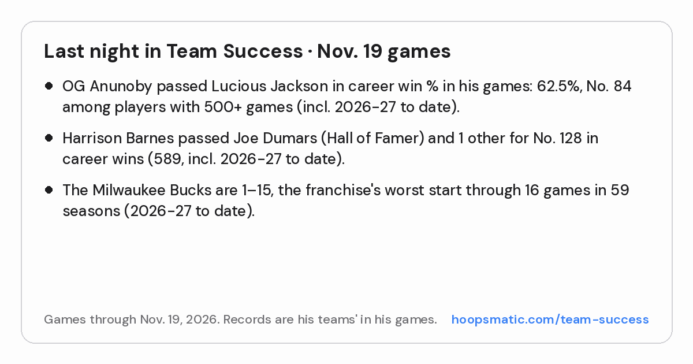

Last night in Team Success · Nov. 19 games
Nov. 20, 2026
 OG Anunoby passed Lucious Jackson in career win % in his games: 62.5%, No. 84 among players with 500+ games (incl. 2026-27 to date).
OG Anunoby passed Lucious Jackson in career win % in his games: 62.5%, No. 84 among players with 500+ games (incl. 2026-27 to date). Harrison Barnes passed Joe Dumars (Hall of Famer) and 1 other for No. 128 in career wins (589, incl. 2026-27 to date).
Harrison Barnes passed Joe Dumars (Hall of Famer) and 1 other for No. 128 in career wins (589, incl. 2026-27 to date). The Milwaukee Bucks are 1–15, the franchise's worst start through 16 games in 59 seasons (2026-27 to date).
The Milwaukee Bucks are 1–15, the franchise's worst start through 16 games in 59 seasons (2026-27 to date). The Memphis Grizzlies are 12–4, the franchise's best start through 16 games since 2014-15 (14–2).
The Memphis Grizzlies are 12–4, the franchise's best start through 16 games since 2014-15 (14–2). The San Antonio Spurs are 13–3, the franchise's best start through 16 games since 2016-17 (13–3).
The San Antonio Spurs are 13–3, the franchise's best start through 16 games since 2016-17 (13–3). Tonight vs the Phoenix Suns: Lauri Markkanen's teams are 3–16 (15.8%) in his 19 regular-season games against them (through 2025-26).
Tonight vs the Phoenix Suns: Lauri Markkanen's teams are 3–16 (15.8%) in his 19 regular-season games against them (through 2025-26). Tonight vs the Washington Wizards: Norman Powell's teams are 13–3 (81.2%) in his 16 regular-season games against them (through 2025-26).
Tonight vs the Washington Wizards: Norman Powell's teams are 13–3 (81.2%) in his 16 regular-season games against them (through 2025-26).
Nov. 20, 2026 · 4 games on Nov. 19, 2026 · each item is a template filled from the data and links to the row or games that prove it · earlier lists · the rules
